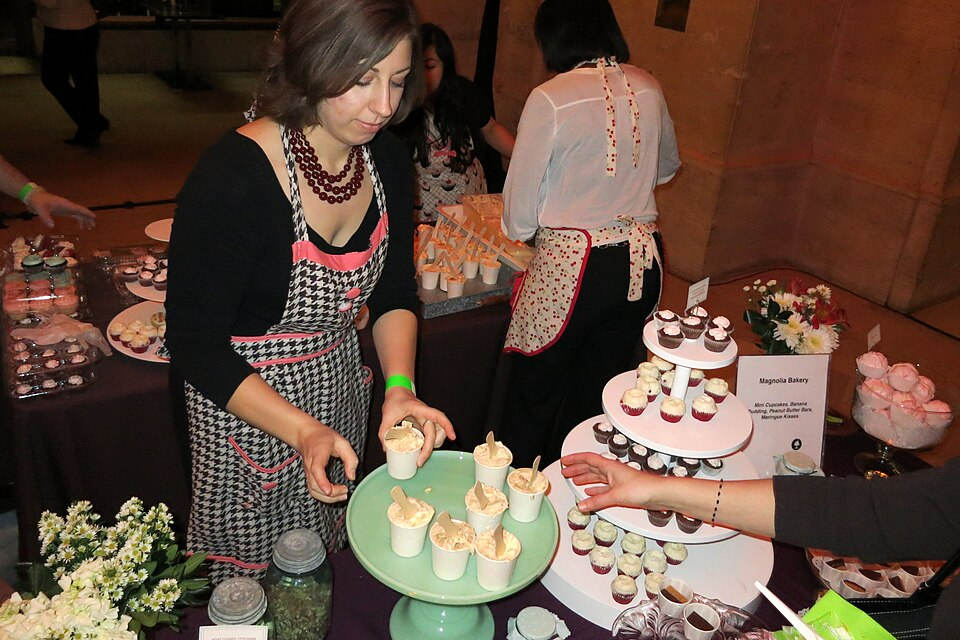

Doces
Pudim de claras

Ingredientes
- 4 claras
- ½ xícara (chá) de Karo
- ½ colher (chá) de baunilha
- 4 colheres (sopa) de Karo para a forma
Modo de preparo
- Bata as claras em neve firme.
- Acrescente o Karo aos poucos e continue a bater, sem parar de bater.
- Forre o fundo e os lados de uma forma de pudim com Karo.
- Coloque a massa de claras e alise a superfície.
- Leve ao forno médio, em banho-maria, por 25 minutos. Desenforme e leve à geladeira.